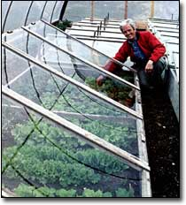
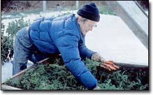
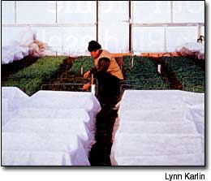

Grow your own gorgeous greens even in the coldest winter with these techniques.
It's enjoyable and instructive to review the progress of an idea you have developed over the years, trying to remember the hallmarks of different stages and the particular influences that resulted in memorable changes.
I was encouraged to do just that when one of my children, Clara Coleman, told me she wanted to try our year-round, fresh-vegetable production at her Colorado home. I developed this technique over time in New England - what started as a simple cold frame has now grown to a 15,000-square-foot commercial greenhouse that I operate with my wife, Barbara Damrosch.
I built my first cold frame in 1966, inspired to adapt two 3-by-6-foot storm windows left over from some renovation work. I nailed four boards together as a frame with the backboard a few inches higher than the front, laid the storm windows on top and grew some delicious early spring and late fall salad greens for myself. At the same time I tried my hand at field production, but the cold frame proved the most successful of the two. I wanted to learn more about this way of growing, so I started to read all I could on the subject.
The 1886 edition of Peter Henderson's classic Gardening For Profit, which has been reprinted (see MOTHER'S Bookshelf, Page 94) introduced me to the extensive frame yards that were a staple of U.S. market gardens through the 1920s. Whole fields were filled with glass-covered frames, called "lights," that were moved routinely off the hardier crops and onto tender, newly set-out crops in an almost balletic sequence as the seasons progressed. C.H. Nissley's 1929 book Starting Early Vegetables and Flowering Plants Under Glass opened my eyes to the many ingenious ways in which the old-time growers refined this technology, making it easier every year to move frames to different garden areas and to incorporate green manures into the rotation to improve the soil.
On a 1974 visit to France, I saw the first practical application of this technique beyond my own efforts. Commercial frame culture had disappeared by this time in the United States, but it continued to be practiced extensively in France. Of the many French growers using frames then, one of the best was Louis Savier, whose three-acre walled garden lay just south of Paris. '
Savier was by far the best market gardener I had visited, ever. He grew winter crops, and all of his seedlings for transplanting to the field were started under rows of impeccably managed cold frames at one end of his property. His Frenchstyle lights had numerous overlapping glass panes puttied precisely in place. They were much larger and heavier than my recycled storm windows and, to my mind, a lot harder to manage, although Savier had no problem.
A few years later on a visit to Holland, I found what I considered to be a perfect glass cold frame cover; these "Dutch lights" had a wooden frame that measured about 2 1/2-by-5 feet. A single large sheet of glass was held in place by grooves sawed into the frame; no putty was needed. Set in double spans, with a "light" resting on either side of a center support, the set-up covered almost 10 square feet and looked very much like a low-angle greenhouse roof sitting directly on the ground.
In 1978, the U.S. Department of Energy announced an appropriate technology small grant program to which I applied for funds to build my own Dutch frames and lights. The following year, I received a grant and built a quarter-acre Dutchstyle facility on the Massachusetts farm where I was living at the time. My purpose was to explore the practical and economic potential for out-of-season food production in New England. I was fascinated with the permanence of glass as a protective cover and with the potential to move the lights off of crops that no longer needed protection and onto more tender crops in order to get double or triple the use out of a limited number of lights.
We found that we could produce out-of-season crops with one quarter or less of the energy used to produce them in warmer climates and ship them to New England, and that we could do it over a 10-month season.
In 1980, I again visited Holland, where I saw my first movable greenhouse, which proved to be the next step in the development of our winter-growing technique. It was the mobility that I always had thought so valuable, that made it possible to cover and uncover the crops as needed.
The 40-by-150-foot glasshouse sat on railroad wheels, which ran on rails three times the length of the house. As the season advanced, this greenhouse-on-wheels could be moved progressively to cover different crops.
Early one spring at my Massachusetts farm, I set a few Dutch lights on low frames inside an unheated greenhouse, to see if the extra protection would speed up germination of some newly sown salad greens. It worked, and the final step in the evolution of this idea - double layering by putting protection inside of protection - was born.
We explored the increased out-of-season cropping potential of cold frames placed inside greenhouses for a few seasons, and then we tried one of the fabric row covers as the inner layer. According to our thermometers, this combination was not as protective as cold frames covered with glass, but the plants didn't seem to notice.
With that development, we had discovered all the pieces of the commercial winter harvest system that we now employ on our Four Season Farm in Harborside, Maine. Mobile greenhouses enable fall and winter crops to be planted outside at the appropriate times and then covered when night temperatures begin to drop below freezing. During the summer and early fall, the same greenhouses protect warm-weather crops. An inner layer of floating fabric row cover held a foot above the soil on simple wire wickets gives winter crops as much protection as if we were farming outdoors in Georgia rather than Maine (from USDA Hardiness Zone 5 to Zone 8).
With any daring new project, all a person has to do is take that first step and plant that first seed, just like my daughter Clara did recently. I encourage all of you to give extended-season production of fresh vegetables a try.
To order Eliot Coleman's book, Four-Season Harvest, see M OTHER's Bookshelf, Page 94, or visit http://www.motherearthnews.com. To order his self-published Winter Harvest Manual, send $15 and your shipping address to Four Season Farm; 609 Weir Cove Road; Harborside, ME 04642.
Mother Earth News
|
 Eliot Coleman checks greens growing in a cold frame inside a greenhouse at his Four Season Farm in Harborside, Maine. |
 Eliot Coleman harvests carrots from an outdoor cold frame at his Four Season Farm. |
 Inside the greenhouse, a layer of fabric row cover held a foot above the soil on wire wickets protects winter crops. Coleman and his wife, Barbara Damrosch, have identified the most winter-hardy crops over time and now, in a further refinement of the system, grow the top varieties in minimally heated greenhouses without the use of the row covers. |